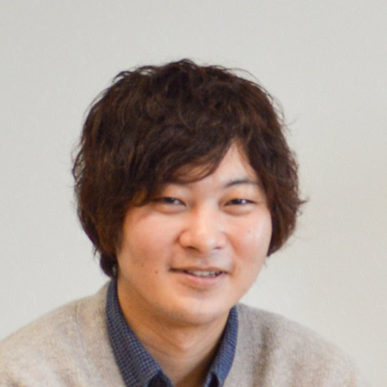

Occupational Therapy × Neuropsychology
脳のはたらきの変化を、
生活の動きから読み解く。
Reading the brain
through everyday actions.
脳卒中などで脳がダメージを受けると、「集中が続かない」「段取りが立てられない」といった、外からは見えにくい困りごとが起こります。私は作業療法士として、こうした変化を生活の中の行動から捉え、発症直後（急性期）から生活を取り戻す支援につなげる研究をしています。
After a stroke, people often struggle with problems that are hard to see from the outside, like keeping focus or planning a task. As an occupational therapist, I study how these changes show up in everyday behavior, and how that knowledge can help patients regain independence from the acute phase onward.

作業療法士／博士（保健学） Assistant Professor, Department of Occupational Therapy,
Shonan University of Medical Sciences
Basics
はじめての方へThree key ideas
研究の話に入る前に、よく出てくる3つの言葉をかんたんに説明します。A quick guide to three terms that come up throughout this page.
作業療法（OT）Occupational therapy
食事・着替え・トイレ・仕事・趣味など、その人にとって大切な「作業」をもう一度できるように支えるリハビリテーションです。作業療法士は国家資格の専門職です。
Rehabilitation that helps people get back to the activities that matter to them, such as eating, dressing, toileting, work and hobbies. Occupational therapists are licensed health professionals.
高次脳機能障害Cognitive dysfunction
脳の損傷によって、注意・記憶・計画を立てる力・言葉・空間の認識などがうまく働かなくなる状態です。見た目ではわかりにくく、「見えない障害」とも呼ばれます。
When brain injury affects attention, memory, planning, language or spatial awareness. Because it is hard to notice from the outside, it is often called an "invisible disability."
急性期リハビリテーションAcute-phase rehab
発症や手術の直後、病院で治療を受けている時期から始めるリハビリです。早く始めることで、その後の回復や生活に良い影響があると考えられています。
Rehabilitation that starts in hospital right after onset or surgery. Starting early is thought to support better recovery and daily life later on.
Research
研究内容Research
脳卒中のあとに起こる「注意障害」を中心に、評価の方法を見直し、それを日常生活の自立に結びつけることを目指しています。My work focuses on attention deficits after stroke: rethinking how we assess them, and linking that assessment to independence in daily life.
-
01見るObserve
注意障害を「行動」から評価するAssessing attention through behavior
注意の働きは机上の検査で調べるのが一般的ですが、急性期の患者さんは体調や意識の状態から検査自体が難しいことも少なくありません。そこで、ふだんの様子を観察して評価する「行動観察評価」の使い方や意味を研究しています。
Attention is usually measured with pen-and-paper tests, but many acute patients cannot complete them. I study observational rating scales that assess attention from how patients behave on the ward.
-
02つなぐConnect
脳の働きと日常生活動作（ADL）の関係Linking cognition and daily living
注意の状態が、食事やトイレなどの日常生活動作の自立とどう関係するのかを、急性期脳卒中患者さんのデータから調べています。「どんな状態なら、どんな支援が必要か」を見通せるようにすることが目標です。
Using data from patients with acute stroke, I examine how attention relates to independence in activities of daily living such as eating and toileting, so clinicians can anticipate what support each patient needs.
-
03確かめるValidate
評価ツールの精度を確かめるTesting assessment tools
現場で使われる検査が測りたいものを正しく測れているかを検証しています。ラッシュ分析による注意検査の検討、前頭葉機能検査（FAB）の分析、日本語版 Oxford Cognitive Screen の信頼性・妥当性研究などに取り組んでいます。
I check whether clinical tests really measure what they claim to, including Rasch analysis of attention tests, studies of the Frontal Assessment Battery (FAB), and validation of the Japanese Oxford Cognitive Screen.
「脳卒中後の注意障害に対する客観的評価法の再考 ― 行動観察評価の有用性 ―」
"Rethinking objective assessment of post-stroke attention deficits: the value of observational rating"
Publications
業績Publications
査読付き論文（20編）を新しい順に掲載しています。Peer-reviewed articles (20), newest first.
色付きの名前は本人、筆頭は筆頭著者の論文です。Highlighted name = me; 1st = first-authored.
- Physical function varies according to characteristics of executive dysfunction in patients with stroke.Sakai K, Hosoi Y, Harada Y, Kato Y, Tanabe J, Miyauchi T. International Journal of Clinical and Health Psychology 26(3): 100725. doi:10.1016/j.ijchp.2026.100725
- Preliminary evaluation of a reduced-item version of the frontal assessment battery in patients with subacute stroke.Sakai K, Hosoi Y, Harada Y, Kato Y, Miyauchi T. Applied Neuropsychology: Adult: 1–6. doi:10.1080/23279095.2026.2668596
- Association between activities of daily living independence and observational attention ratings in patients with acute stroke.筆頭1stMiyauchi T, Sasaki S, Honda Y, Sakai K, Tanemura R. Brain Injury: 1–6. doi:10.1080/02699052.2026.2642252
- Relationship between behavioural observational rating scale of attention function and toileting ability in patients with acute stroke: A cross-sectional study.筆頭1stMiyauchi T, Sasaki S, Nagao T, Sakai K, Tanemura R. British Journal of Occupational Therapy. doi:10.1177/03080226251412249
- 化学療法を実施した造血器腫瘍患者に対する作業療法は倦怠感の減少に関与するかEfficacy of Occupational Therapy in Reducing Fatigue in Patients Undergoing Chemotherapy for Hematologic Cancers筆頭1st宮内貴之Miyauchi T, 佐々木祥太郎, 近藤千雅, 佐野文明, 種村留美., Sasaki S, Kondo C, Sano F, Tanemura R. 神奈川作業療法研究Kanagawa Journal of Occupational Therapy Research 15(1): 22–29. doi:10.57293/kanaotjournal.15.1_22
- Long-term Recovery of Mental Health and Social Participation Following Severe COVID-19 with Occupational Therapy: A Case Report.Sasaki S, Yokoyama H, Miyauchi T, Sasaki Y, Abe N, Yamanokuchi K, Sugimura S, Nishizawa M. Asian Journal of Occupational Therapy 21(1): 125–128. doi:10.11596/asiajot.21.125
- Poststroke Attention Function: A Rasch Analysis of Neuropsychological Tests.筆頭1stMiyauchi T, Sasaki S, Nagao T, Tanemura R. Asian Journal of Occupational Therapy 21(1): 117–124. doi:10.11596/asiajot.21.117
- Survey on Occupational Therapy and Postgraduate Education in Intensive Care Units in Japan.Komaba K, Miyauchi T, Kojima N, Yamashita Y, Suzuki H. Asian Journal of Occupational Therapy 21(1): 94–102. doi:10.11596/asiajot.21.94
- Components of frontal assessment battery and clinical features in patients with stroke.Sakai K, Hosoi Y, Harada Y, Kato Y, Miyauchi T. Journal of Rehabilitation Medicine 57: jrm43270. doi:10.2340/jrm.v57.43270
- Assessment tools for attention deficits in patients with stroke: a scoping review across components and recovery phases.Sakai K, Miyauchi T, Tanabe J. PeerJ 13: e19163. doi:10.7717/peerj.19163
- 意思決定支援ツールを用いて段階的かつ複合的介入を立案したことでBPSDとADLの改善に繋がった脳血管性認知症の事例A case of cerebrovascular dementia in which designing a stepwise complex intervention using decision support tools led to improvement of BPSD and ADL筆頭1st宮内貴之Miyauchi T, 佐々木祥太郎, 佐々木洋子, 根本慎司, 種村留美., Sasaki S, Sasaki Y, Nemoto S, Tanemura R. 神奈川作業療法研究Kanagawa Journal of Occupational Therapy Research 14(1): 11–17. doi:10.57293/kanaotjournal.14.1_11
- Behavioral Problems and Self-Feeding Independence Among Patients With Acute Stroke: A Single-Center Study.筆頭1stMiyauchi T, Sasaki S, Tanemura R. The American Journal of Occupational Therapy 78(5).
- 急性期くも膜下出血患者の注意機能の行動観察評価と日常生活活動の自立度の推移筆頭1st宮内貴之, 佐々木祥太郎, 佐々木洋子, 最上谷拓磨, 白濱勲二. 作業療法ジャーナル 58(2): 161–166.
- Observational Rating Scale of Attention Function is Associated with Independence in Activities of Daily Living.筆頭1stMiyauchi T, Sasaki S, Sasaki Y, Mogamiya T, Tanemura R, Shirahama K. Asian Journal of Occupational Therapy 19(1): 236–242.
- 多発性硬化症によるUseless hand syndromeに対して感覚再学習を実施した一例佐々木洋子, 佐々木祥太郎, 宮内貴之. 作業療法 42(4): 532–538.
- 急性期脳損傷患者におけるBox and Block Testと食事動作の自立度の関連筆頭1st宮内貴之, 佐々木祥太郎, 佐々木洋子, 最上谷拓磨. 作業療法 42(3): 263–269.
- Balint症候群を呈した急性期脳出血患者1例のADLの代償方法筆頭1st宮内貴之, 佐々木祥太郎, 佐々木洋子, 最上谷拓磨, 榊原陽太郎. 作業療法 41(4): 487–493.
- 急性期脳卒中患者における注意機能の行動観察評価とADLの関連筆頭1st宮内貴之, 佐々木祥太郎, 佐々木洋子, 最上谷拓磨, 白濱勲二. 高次脳機能研究 41(3).
- 急性期脳梗塞患者1例における注意機能と日常生活動作能力の推移：行動評価を用いた検討筆頭1st宮内貴之, 佐々木祥太郎, 佐々木洋子, 最上谷拓磨, 榊原陽太郎. 神奈川作業療法研究 9(1).
- 急性期脳卒中片麻痺患者の日常生活における麻痺側上肢の使用頻度に影響を及ぼす要因 ― 患者特性，身体機能，理解度の観点から ―佐々木洋子, 高橋香代子, 佐々木祥太郎, 宮内貴之, 榊原陽太郎. 作業療法 38(6).
著書（分担執筆）Book chapters
- 『高次脳機能障害を読み解く：病態と評価から考えるリハビリテーション』医学書院, 2026年（担当：注意障害, COLUMN）Understanding Higher Brain Dysfunction: Rehabilitation Based on Pathology and Assessment. Igaku-Shoin, 2026 (chapter: attention deficits; column). In Japanese.
- 『OT臨床ハンドブック ポケット版：聖マリアンナ医科大学病院リハビリテーションセンター』三輪書店, 2021年（担当：脳卒中, ALS）OT Clinical Handbook, Pocket Edition. Miwa-Shoten, 2021 (chapters: stroke, ALS). In Japanese.
主な招待講演Selected invited talks
- 脳血管疾患領域の急性期作業療法 ― 日本作業療法士協会 重点課題研修（2026年12月）Acute-phase occupational therapy for cerebrovascular disease. Japanese Association of Occupational Therapists training course, Dec 2026.
- 脳卒中を脳機構から読み解く専門作業療法士の挑戦 ― 第60回日本作業療法学会 教育セミナー（2026年11月）Understanding stroke through brain mechanisms. Educational seminar, 60th Japanese Occupational Therapy Congress, Nov 2026.
- Cognitive assessment for stroke patients: From the perspective of occupational therapy. 1st International Symposium on Neuropsychological Rehabilitation, Sep 2025.
- 作業療法士のための脳科学的視点から考える高次脳機能障害（失行・失認／無視症候群／注意障害・遂行機能障害／記憶障害）― エポックセミナー（2025〜2026年）Seminar series on higher brain dysfunction from a neuroscience perspective (apraxia/agnosia, neglect, attention/executive function, memory). Epoch Seminar, 2025–2026.
研究費・受賞Grants and awards
- 科研費 若手研究「脳卒中後の注意障害に対する客観的評価法の再考 ― 行動観察評価の有用性 ―」（2025〜2027年, 代表）JSPS KAKENHI Early-Career Scientists, 2025–2027 (PI).
- 日本理学療法学会連合 研究助成「日本語版OCS Plusの信頼性と妥当性の検証」（2026〜2027年, 分担）Japanese Society of Physical Therapy research grant: validation of the Japanese OCS Plus, 2026–2027 (co-investigator).
- 東京都公立大学法人 研究費「ワーキングメモリーを評価するN-back課題の開発」（2024〜2025年, 分担）Tokyo Metropolitan Public University Corporation grant: developing an N-back task for working memory, 2024–2025 (co-investigator).
- 神奈川県作業療法士会 研究助成「集中治療センターにおける作業療法教育に関する実態調査」（2023〜2025年, 分担）Kanagawa Association of Occupational Therapists grant: survey of OT education in intensive care, 2023–2025 (co-investigator).
- 第18回神奈川県作業療法学会 学会長賞（2021年, 共同演者）President's Award, 18th Kanagawa Occupational Therapy Congress, 2021 (co-author).
学会発表などを含む全業績は researchmap をご覧ください。For a complete list including conference presentations, see researchmap.
Call for collaborators
共同研究者を
募集していますLet's work together
臨床の「気になる」を、一緒に研究のかたちにしませんか。所属や職種、経験年数は問いません。
Have a clinical question you'd like to turn into research? I welcome collaborators from any institution, profession or career stage.
takayuki.miyauchi@sums.ac.jp
- 急性期・回復期の病院で、脳卒中や高次脳機能障害のリハビリに携わっている方（多施設でのデータ収集など）Clinicians working in acute or subacute stroke rehabilitation (e.g., multi-site data collection)
- 注意障害・遂行機能障害などの評価法の開発や検証に関心のある研究者の方Researchers interested in developing or validating assessments of attention and executive function
- 研究を始めてみたい臨床の作業療法士・リハビリ職の方Therapists who want to start doing research
- 作業療法や脳の研究に興味がある学生の方（高校生の進路相談も歓迎します）Students curious about occupational therapy or brain science, including high school students
Profile
プロフィールProfile
急性期病院で約10年間、作業療法士として脳卒中などの患者さんのリハビリを担当したのち、大学教員として教育と研究に取り組んでいます。After about ten years as an occupational therapist in acute-care hospitals, working mainly with stroke patients, I now teach and do research at a university.
経歴Career
- 2024–
- 湘南医療大学 保健医療学部 作業療法学専攻 助教Assistant Professor, Shonan University of Medical Sciences
- 2015–2024
- 聖マリアンナ医科大学横浜市西部病院 作業療法士Occupational Therapist, St. Marianna University Yokohama City Seibu Hospital
- 2013–2015
- 新横浜リハビリテーション病院 作業療法士Occupational Therapist, Shin-Yokohama Rehabilitation Hospital
学歴・学位Education
- 2025
- 神戸大学大学院 保健学研究科 博士（保健学）PhD in Health Sciences, Kobe University
- 2021
- 神奈川県立保健福祉大学大学院 修士（リハビリテーション学）Master of Rehabilitation, Kanagawa University of Human Services
- 2013
- 帝京平成大学 地域医療学部 作業療法学科 卒業BS, Occupational Therapy, Teikyo Heisei University